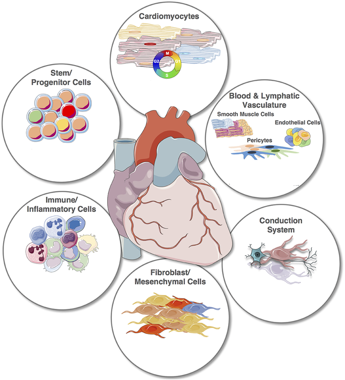
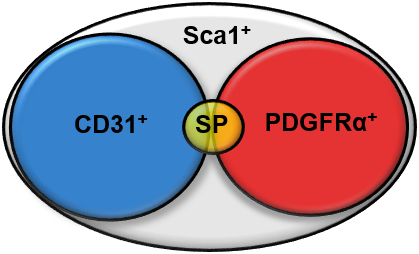

Background
Setting the scene
Before the XXIst century, the heart was generally regarded as an organ lacking a stemm cell population in adults (ADDD REFFS). By the 2000s the existence of this population had already become widely accepted amongst the scientific community and the first reports discussing adult stem cell mediated cardiac regeneration appeared on the literature.
However, at this point in time, there is still no consensus on this regenerative role
Cardiac Progenitor Stem Cells
Dr. Michela’s group is centred on studying those cardiac progenitor stem cells, working with both human and mouse samples.
In their murine model, a characterisation of the Cardiac Progenitor stem cells revealed a total of four markers that, with partial overlapping, define the population and can be readily identified in Fluorescent-Activated Cell Sorting assays (FACS):
- Stem cell antigen-1 (Sca1)
- Platelet-derived growth factor (PDGFRα)
- PECAM-1/CD31
- Side population phenotype (SP)
Of these markers, my work revolves around the PDGFRα positive population.
